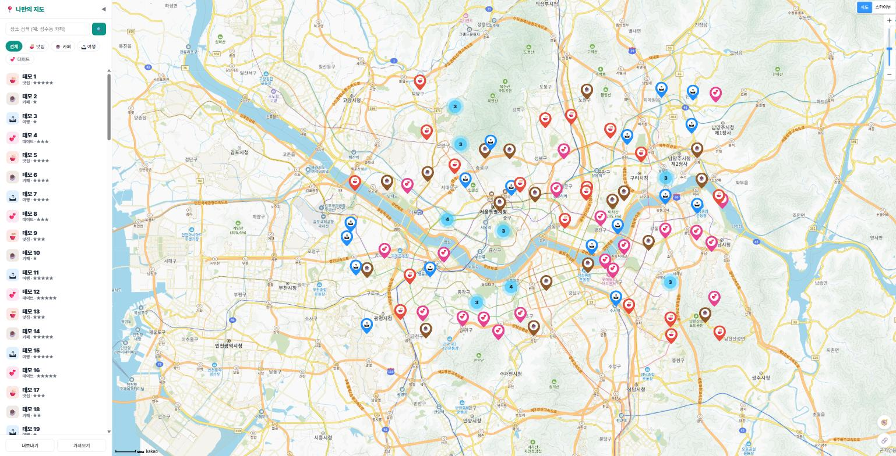
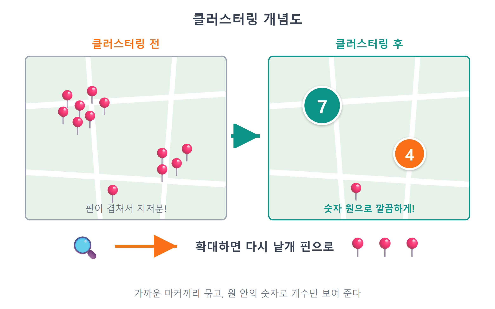
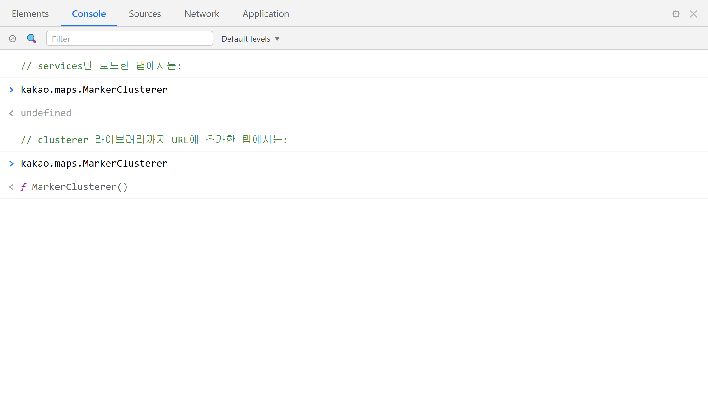
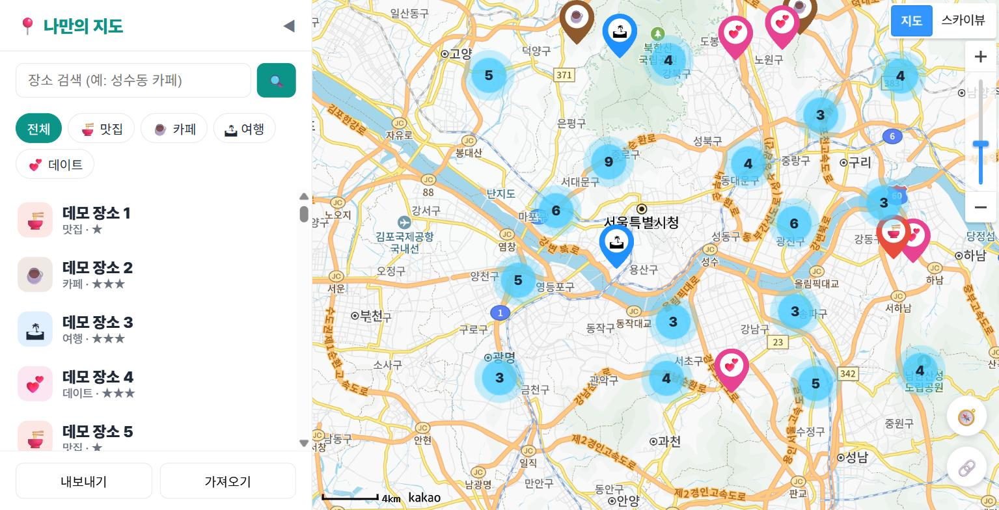
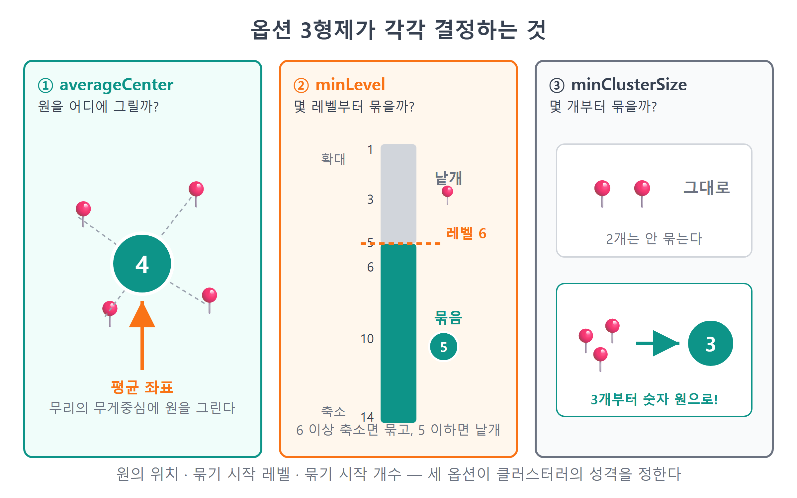
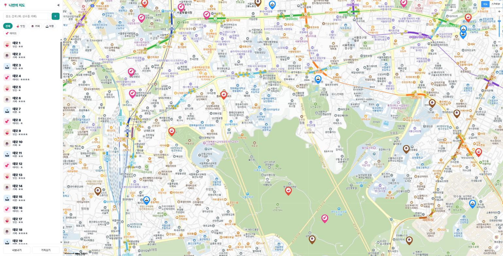

22장 마커 클러스터러¶
이 장에서 배우는 것
- 마커가 100개쯤 되면 지도가 어떻게 망가지는지 직접 시연합니다
- 가까운 마커를 숫자 하나로 묶는 클러스터링 개념을 배웁니다
- SDK 주소에
&libraries=clusterer를 붙여 클러스터러 확장팩을 로드합니다 kakao.maps.MarkerClusterer를 만들고addMarkers/removeMarkers로 마커를 맡깁니다averageCenter·minLevel·minClusterSize세 가지 옵션의 의미를 이해합니다
우리 지도는 이제 어엿한 앱입니다. 장소를 추가하고(16장), 새로고침해도 남고(17장), 목록과 상세 패널로 관리하고(18~19장), 내 위치를 찍고(20장), 링크로 공유까지 합니다(21장). 그런데 이 앱을 정말 열심히 쓰는 미래의 여러분을 상상해 봅시다. 맛집 도장 깨기 1년 차, 저장한 장소가 100개를 넘겼습니다. 그때 지도는 어떤 모습일까요?
결론부터 말하면, 핀 지옥입니다. 서울 지도 전체가 마커로 뒤덮여서 어디에 뭐가 있는지 하나도 안 보입니다. 마커가 마커를 가리고, 클릭하려던 카페 대신 뒤에 숨은 국밥집 말풍선이 열립니다. 데이터가 많아질수록 지도가 오히려 못 쓰게 되는 역설이죠. 다행히 이 문제는 지도 서비스들이 이미 수십 년 고민해 온 문제이고, 표준 해법도 있습니다. 가까운 마커들을 하나로 묶어서 숫자로 보여 주는 클러스터링입니다. 이번 장에서는 먼저 문제를 일부러 만들어 눈으로 확인한 다음, 카카오가 주는 클러스터러 확장팩으로 해결합니다. 고치는 코드보다 문제를 만드는 코드가 더 긴, 조금 특이한 장이 될 겁니다.
22.1 장소 100개 — 일부러 문제 만들기¶
문제를 고치려면 먼저 문제가 눈앞에 있어야 합니다. 그런데 장소 100개를 손으로 하나씩 추가하려면 오늘 하루가 다 갑니다. 이럴 때야말로 AI에게 시킬 일입니다. 앱 코드를 고치는 게 아니라, 브라우저 콘솔에 붙여 넣을 일회용 스크립트를 짜 달라고 해 봅시다.
그 전에 딱 하나, 안전벨트부터 맵시다. 지금부터 할 실험은 localStorage에 든 여러분의 진짜 장소 데이터를 테스트 데이터로 통째로 바꿔치기합니다. 17장에서 만든 내보내기 버튼을 눌러 지금 데이터를 JSON 파일로 백업해 두세요. 실험이 끝나면 가져오기로 되돌릴 겁니다.
⚠️ 주의
이번 실습은 localStorage를 덮어씁니다. 실습 전에 반드시 사이드바의 내보내기로 places.json 백업 파일을 받아 두세요. 백업 없이 덮어쓰면 그동안 모은 장소가 사라집니다. 되돌리기(3장에서 배운 git)로도 못 구합니다 — localStorage는 코드가 아니라 브라우저 안에 있으니까요.
백업을 확인했다면 Claude Code에게 시킵니다.
🗣 이렇게 시키세요
브라우저 콘솔에 붙여 넣을 일회용 스크립트를 짜줘. 서울 근처(위도 37.45~37.65, 경도 126.85~127.15) 무작위 좌표로 테스트 장소 100개를 만들어서 localStorage 키 'my-map-places-v1'에 저장하고 새로고침까지 해줘. 장소 스키마는 id/name/category/lat/lng/rating/memo이고 category는 food, cafe, travel, date를 골고루 섞어줘. 앱 파일은 건드리지 마.
Claude Code가 만들어 준 스크립트입니다. 개발자도구 콘솔(++f12++)에 통째로 붙여 넣고 Enter를 누르세요.
// 테스트용 장소 100개 생성 → localStorage 덮어쓰기 (일회용)
const cats = ['food', 'cafe', 'travel', 'date'];
const bulk = Array.from({ length: 100 }, (_, i) => ({
id: 'bulk' + i,
name: '테스트 장소 ' + (i + 1),
category: cats[i % 4],
lat: 37.45 + Math.random() * 0.2,
lng: 126.85 + Math.random() * 0.3,
rating: (i % 5) + 1,
memo: '클러스터 실험용',
}));
localStorage.setItem('my-map-places-v1', JSON.stringify(bulk));
location.reload();
짧지만 배울 게 많은 코드입니다. Array.from({ length: 100 }, ...)은 "길이 100짜리 배열을 만들되, 각 칸을 두 번째 함수로 채워라"라는 관용구입니다. 두 번째 함수의 i는 0부터 99까지의 번호표죠. cats[i % 4]는 나머지 연산으로 네 카테고리를 0,1,2,3,0,1,2,3… 돌려 가며 배정하는 고전적인 요령입니다. 좌표는 Math.random()(0 이상 1 미만의 난수)에 범위를 곱해 서울 언저리에 흩뿌렸습니다. 마지막 두 줄이 핵심인데, 17장에서 배운 그대로 객체 배열을 JSON 문자열로 바꿔 우리 앱이 쓰는 키에 저장하고, location.reload()로 새로고침합니다. 새로고침하면 store.js의 load()가 이 데이터를 읽어 들이겠죠. 앱의 저장 방식을 이해하고 있으면, 이렇게 앱 바깥에서 데이터를 주입하는 테스트 도구도 만들 수 있습니다.
새로고침된 화면을 보세요. 예고한 대로 참사입니다.

그림 22.1 — 마커 100개가 뒤덮은 지도 (클러스터러 적용 전)
지도를 축소할수록 상황은 나빠집니다. 서울 전체가 보이는 레벨에서는 마커들이 완전히 포개져서 몇 개인지 셀 수도 없습니다. 마커를 클릭해 보면 어느 게 클릭될지 복불복이고요. 사이드바 목록은 스크롤로 버티지만, 지도는 면적이 정해져 있어서 버틸 수가 없습니다. 이것이 마커 100개 문제입니다. 100개에서 이 정도니 1,000개면 브라우저가 버벅이는 성능 문제까지 겹칩니다.
22.2 클러스터링 — 묶으면 보인다¶
해법은 여러분이 이미 매일 보고 있습니다. 카카오맵이나 배달 앱에서 지도를 축소하면 핀 대신 숫자가 적힌 동그라미가 나타나죠. 스마트폰 사진 앱이 사진 수천 장을 "서울 234장, 제주 89장"으로 묶어 주는 것도 같은 발상입니다. 낱개로 보여 줄 수 없을 만큼 많으면, 가까운 것끼리 묶고 개수만 보여 준다 — 이것이 클러스터링(clustering)1입니다.
동작 원리는 단순합니다. 지도가 축소되어 있을 때, 화면상 가까운 마커들을 한 무리(클러스터)로 묶어 마커 대신 원 하나를 그립니다. 원 안의 숫자는 그 무리에 묶인 마커의 개수입니다. "이 동네에 저장한 곳이 12군데 있구나"라는 정보는 남기면서, 핀 12개의 시각적 아우성은 지우는 겁니다. 그리고 지도를 확대하면 무리가 점점 잘게 쪼개지다가, 충분히 확대되면 원래의 개별 마커로 돌아옵니다. 멀리서는 요약을, 가까이서는 디테일을 — 좋은 지도의 원칙 그대로입니다.

그림 22.2 — 클러스터링 개념도
이 묶는 계산을 우리가 직접 짜야 할까요? 다행히 아닙니다. 카카오지도 SDK에는 이 일을 통째로 해 주는 MarkerClusterer가 준비되어 있습니다. 다만 15장의 services처럼 기본 패키지가 아닌 확장팩입니다. 이름은 clusterer. 우리가 할 일은 확장팩을 켜고, 클러스터러 객체를 만들고, 마커 관리를 그에게 위임하는 것뿐입니다. 하나씩 갑시다.
22.3 clusterer 확장팩 로드하기¶
15장에서 SDK 주소 뒤에 &libraries=services를 붙이며 "확장팩이 여러 개 필요하면 쉼표로 잇는다"고 예고했었습니다. 그 예고를 회수할 시간입니다. 수정할 파일은 이번에도 src/loader.js 한 곳뿐입니다.
🗣 이렇게 시키세요
src/loader.js의 카카오 SDK 주소에서 libraries에 clusterer를 추가해줘. 지금 services만 있는데 쉼표로 이어서 둘 다 로드되게 해줘. 다른 부분은 건드리지 마.
바뀐 loader.js입니다. 이번에도 딱 한 줄입니다.
// src/loader.js — 카카오 지도 SDK를 동적으로 불러오는 모듈
export function loadKakaoSdk() {
return new Promise((resolve, reject) => {
const key = import.meta.env.VITE_KAKAO_JS_KEY;
if (!key) {
reject(new Error('VITE_KAKAO_JS_KEY가 .env에 없습니다.'));
return;
}
const script = document.createElement('script');
script.src =
`https://dapi.kakao.com/v2/maps/sdk.js?appkey=${key}` +
`&autoload=false&libraries=services,clusterer`; // ← 쉼표로 확장팩 추가!
script.onload = () => kakao.maps.load(() => resolve(kakao));
script.onerror = () => reject(new Error('카카오 SDK 로드 실패 — 키/도메인 확인'));
document.head.appendChild(script);
});
}
libraries=services,clusterer — 쿼리 문자열 하나에 값 두 개를 쉼표로 실었습니다. 제대로 들어왔는지는 15장 때와 같은 방법으로 확인합니다. 강력 새로고침(++ctrl+shift+r++) 후 콘솔에 입력해 보세요.
ƒ (a) 같은 함수(클래스)가 출력되면 성공입니다. undefined가 나온다면 철자를 확인하고 강력 새로고침을 다시 해 보세요. 확장팩을 붙였는데 안 보이는 문제의 8할은 캐시입니다.

그림 22.3 — 콘솔에서 MarkerClusterer 로드 확인
💡 팁
services는 검색(15장), clusterer는 클러스터링, 그리고 drawing이라는 세 번째 확장팩(지도 위에 도형 그리기)도 있습니다. 확장팩은 쓰는 것만 싣는 게 원칙입니다. 우리 앱은 검색과 클러스터링만 쓰니 두 개면 충분합니다.
22.4 MarkerClusterer 적용하기¶
이제 본 공사입니다. 지금까지 우리 mapView.js의 renderPlaces는 마커를 만들 때마다 marker.setMap(map)으로 한 개씩 직접 지도에 붙이고, 다시 그릴 때는 한 개씩 떼어 왔습니다. 클러스터러를 쓰면 이 관계가 바뀝니다. 마커를 지도에 직접 붙이는 대신 클러스터러에게 맡기고, 붙일지 묶을지는 클러스터러가 지도 레벨을 보며 알아서 결정하게 합니다. 마커 인사팀을 새로 만들어서 채용·배치를 전부 위임하는 셈이죠.
🗣 이렇게 시키세요
src/mapView.js에 마커 클러스터러를 적용해줘. createMap에서 kakao.maps.MarkerClusterer를 하나 만들어서 모듈 변수로 들고 있어줘. 옵션은 averageCenter를 켜고, minLevel 6, minClusterSize 3으로. 그리고 renderPlaces에서 마커를 setMap으로 직접 붙이지 말고 클러스터러의 addMarkers로 한꺼번에 맡기고, 다시 그리기 전에는 removeMarkers로 이전 마커들을 클러스터러에서 빼줘. 말풍선 오버레이 로직은 그대로 둬.
Claude Code가 고친 mapView.js의 핵심부입니다. 먼저 지도를 만드는 createMap 쪽.
// src/mapView.js — createMap에 클러스터러 생성 추가
let map;
let clusterer;
let markers = []; // { marker, overlay, place }
export function createMap(container, center = { lat: 37.5665, lng: 126.978 }, level = 7) {
map = new kakao.maps.Map(container, {
center: new kakao.maps.LatLng(center.lat, center.lng),
level,
});
map.addControl(new kakao.maps.MapTypeControl(), kakao.maps.ControlPosition.TOPRIGHT);
map.addControl(new kakao.maps.ZoomControl(), kakao.maps.ControlPosition.RIGHT);
clusterer = new kakao.maps.MarkerClusterer({
map, // 이 지도 위에서 일한다
averageCenter: true, // 클러스터 위치 = 묶인 마커들의 평균 좌표
minLevel: 6, // 레벨 6 이상(축소)일 때만 묶는다
minClusterSize: 3, // 3개 이상 모여야 묶는다
});
return map;
}
클러스터러는 지도처럼 앱에 딱 하나만 있으면 되는 물건이라, 지도를 만드는 createMap에서 함께 만들고 모듈 변수 clusterer에 보관합니다. 생성 옵션의 map은 어느 지도 위에서 일할지 알려 주는 항목입니다. 꼭 생성 시점에 넘겨야 하는 것은 아니고 만들어 두었다가 나중에 setMap()으로 연결할 수도 있지만, 우리는 처음부터 붙여 두는 쪽이 간단합니다. 나머지 세 옵션은 다음 절에서 하나씩 뜯어봅니다.
다음은 renderPlaces. 바뀐 곳은 시작과 끝, 딱 두 군데입니다.
export function renderPlaces(places) {
closeOverlay();
clusterer.removeMarkers(markers.map((m) => m.marker)); // ← 이전엔 setMap(null) 반복
markers = [];
for (const place of places) {
const pos = new kakao.maps.LatLng(place.lat, place.lng);
const marker = new kakao.maps.Marker({
position: pos,
image: markerImageFor(place.category),
title: place.name,
// setMap이 없다! 지도 배치는 클러스터러의 일
});
// ... 말풍선 오버레이와 클릭 리스너는 13장 그대로 ...
markers.push({ marker, overlay, place });
}
clusterer.addMarkers(markers.map((m) => m.marker)); // ← 이전엔 setMap(map) 반복
}
위에서부터 짚어 봅시다.
clusterer.removeMarkers(...) — 다시 그리기 전, 이전 판의 마커들을 클러스터러에서 뺍니다. markers 배열에는 { marker, overlay, place } 꾸러미가 들어 있으므로 markers.map((m) => m.marker)로 마커만 뽑은 배열을 만들어 넘깁니다. removeMarker(단수)를 반복문으로 100번 부르는 방법도 있지만, 복수형 removeMarkers에 배열을 한 번 넘기는 쪽이 코드도 간결하고 클러스터러에게 일감을 한 번에 맡기는 자연스러운 방식입니다. (공식 문서를 보면 두 메서드 모두 화면 다시 그리기를 미루는 선택적 nodraw 인자를 받습니다 — 성능을 더 조이고 싶어질 때 찾아볼 키워드입니다.)
마커 생성에 setMap이 없다 — 이게 사고방식의 전환점입니다. 마커는 만들어만 두고 지도에 붙이지 않습니다. 지도에 붙일지, 묶어서 숨길지는 이제 우리가 아니라 클러스터러가 결정합니다. 우리가 직접 setMap(map)을 해 버리면 클러스터러가 묶어도 마커가 따로 또 보이는 유령 현상이 생깁니다.
clusterer.addMarkers(...) — 반복문이 끝난 뒤, 새 마커 전부를 배열로 한 번에 맡깁니다. 이 호출 한 방으로 클러스터러는 현재 지도 레벨을 보고 "묶을 놈은 묶고, 낱개로 보여 줄 놈은 보여 주는" 배치를 끝냅니다. 이후 사용자가 지도를 확대·축소할 때마다 재배치도 알아서 합니다. 우리는 이벤트 하나 달지 않았는데 말이죠.
말풍선(CustomOverlay)은 클러스터러와 무관하게 13장 방식 그대로 setMap으로 열고 닫습니다. 클러스터러가 관리하는 것은 어디까지나 마커뿐입니다.
새로고침해 봅시다. 아까의 핀 지옥이 있던 자리에, 숫자가 적힌 동그라미 몇 개가 점잖게 앉아 있습니다.

그림 22.4 — 클러스터러 적용 후: 숫자 원으로 정리된 지도
덤으로 얻는 것도 있습니다. 성능입니다. 브라우저 입장에서 마커 하나는 지도 위에 얹힌 그림 조각 하나이고, 지도를 드래그할 때마다 전부 다시 그려야 합니다. 100개면 100개를, 1,000개면 1,000개를요. 클러스터러가 90개를 원 3개로 접어 주면 브라우저는 화면에 실제로 보이는 십수 개만 그리면 됩니다. 보기 좋아지는 김에 빨라지기까지 하는, 드물게 공짜 점심 같은 기능입니다.
그림 22.1과 그림 22.4는 같은 데이터입니다. 데이터는 한 글자도 바뀌지 않았고, 보여 주는 방식만 바뀌었습니다. 원 안의 숫자를 읽어 보세요. "이 동네에 23곳"이라는 요약 정보는 오히려 핀 23개보다 유용합니다. 숫자 원을 클릭해 보세요. 지도가 한 단계 확대되면서 그 무리가 더 작은 무리들로 쪼개집니다. 이 클릭-확대 동작은 클러스터러의 기본 동작이라 우리가 짠 코드가 아닙니다.
22.5 옵션 3형제 — averageCenter, minLevel, minClusterSize¶
프롬프트에서 지정한 옵션 세 개를 이제 제대로 이해해 봅시다. 클러스터러의 성격을 결정하는 3형제입니다.
| 옵션 | 우리 설정 | 의미 |
|---|---|---|
averageCenter |
true |
클러스터 원을 묶인 마커들의 평균 좌표에 그린다 (기본값 false면 첫 마커 위치) |
minLevel |
6 |
레벨 6 이상(그만큼 축소된 상태)에서만 클러스터링한다 |
minClusterSize |
3 |
3개 이상 모여야 묶는다 (기본값 2) |
averageCenter — 클러스터 원을 지도의 어느 지점에 그릴지 정합니다. 기본값(false)은 무리의 첫 번째 마커 위치에 그립니다. 계산은 공짜지만, 마커들이 오른쪽에 몰려 있는데 원은 왼쪽 끝에 그려지는 어색한 그림이 나올 수 있습니다. true로 켜면 묶인 마커들의 위도·경도 평균 지점, 즉 무리의 무게중심에 그립니다. 반 대표를 뽑는데 출석부 1번을 시키느냐, 교실 한가운데 앉은 친구를 시키느냐의 차이랄까요. 화면의 자연스러움은 평균 쪽이 확실히 낫습니다.
minLevel — 클러스터링을 시작하는 축소 레벨입니다. 10장에서 배웠듯 카카오지도의 레벨은 숫자가 클수록 축소(넓게 보기)입니다. minLevel: 6은 "레벨 6 이상으로 축소됐을 때만 묶어라"라는 뜻입니다. 뒤집어 말하면 레벨 5 이하로 확대하면 클러스터가 전부 해제되고 개별 마커가 돌아옵니다. 동네 골목이 보일 만큼 확대했는데도 마커가 숫자 원에 숨어 있으면 답답하겠죠. 우리 앱의 4레벨 확대 이동(focusPlace)과도 아귀가 맞습니다. 목록에서 장소를 클릭해 레벨 4로 날아가면, 그 동네 마커들은 항상 낱개로 보입니다.
minClusterSize — 몇 개부터 묶을지 정합니다. 기본값은 2인데, 겨우 2개를 숫자 "2"로 바꾸는 건 좀 야박합니다. 마커 2개는 그냥 보여 줘도 안 지저분하니까요. 우리는 3으로 올려서 "3개 이상 몰릴 때만" 묶게 했습니다. 이 값을 10으로 올리면 웬만해선 안 묶는 느슨한 클러스터러가, 2로 내리면 부지런히 묶는 깐깐한 클러스터러가 됩니다.

그림 22.5 — 옵션 3형제가 각각 결정하는 것
이 세 값에 유일한 정답은 없습니다. 6·3이라는 우리 설정도 "서울 안에 장소 100개"라는 상황에 맞춘 출발점일 뿐입니다. 전국 단위 여행 지도라면 minLevel을 더 올려 넓은 화면에서만 묶는 게 나을 수 있고, 한 동네 맛집 지도라면 내리는 게 나을 수 있습니다. 다행히 실험 비용은 거의 0입니다. "minLevel을 8로 바꿔줘" 한 줄이면 Claude Code가 고쳐 주고, 새로고침 한 번이면 결과가 보입니다. 숫자를 바꿔 가며 내 데이터에 맞는 감을 잡는 것 — 이것도 바이브코딩의 일부입니다.
이제 옵션이 실제로 동작하는지 눈으로 검증해 봅시다. 지도에서 숫자가 큰 클러스터 하나를 골라 마우스 휠로 천천히 확대해 보세요. 레벨이 내려갈 때마다 큰 무리가 작은 무리로 갈라지고, 레벨 5로 들어서는 순간 숫자 원이 일제히 사라지며 우리의 커스텀 핀들이 촤르륵 나타납니다. 다시 축소하면 역순으로 다시 묶이고요. 14장의 카테고리 필터도 눌러 보세요. 필터를 바꾸면 renderPlaces가 다시 실행되고, removeMarkers → addMarkers 흐름 덕에 클러스터 숫자까지 정확하게 갱신됩니다. ☕카페만 남기면 원 안의 숫자가 카페 개수로 줄어듭니다.

그림 22.6 — 확대하면 클러스터가 낱개 마커로 풀린다
💡 팁
클러스터 원의 파란 스타일이 마음에 안 든다면 styles 옵션으로 크기·색·글꼴을 통째로 바꿀 수 있습니다. "클러스터러 styles 옵션으로 우리 앱 브랜드 색에 맞는 원을 만들어줘"라고 시키면 됩니다. 묶인 개수 구간별로 다른 스타일(10개 미만은 작게, 100개 이상은 크게)을 주는 것도 가능합니다. 장 끝 🔎 더 찾아보기에서 키워드로 남겨 둡니다.
실험이 끝났으면 데이터를 원래대로 되돌립시다. 사이드바의 가져오기 버튼으로 아까 백업해 둔 places.json을 선택하면 끝입니다. 17장에서 "백업은 보험"이라고 했는데, 겨우 다섯 장 만에 보험금을 탔네요. 진짜 데이터로 돌아와도 클러스터러는 그대로 동작합니다. 장소가 적을 때는 조용히 있다가(3개 이상 안 몰리면 묶지 않으니까요), 많아지면 알아서 일하는 — 있는 줄도 모르게 좋은 기능이 됐습니다.
22.6 마무리¶
📌 핵심 요약
- 마커가 수십 개를 넘으면 서로 가리고 겹치는 마커 100개 문제가 생기며, 표준 해법은 가까운 마커를 숫자 원으로 묶는 클러스터링입니다.
- 클러스터러는 확장팩입니다. SDK 주소의
libraries에 쉼표로 이어libraries=services,clusterer로 로드합니다. new kakao.maps.MarkerClusterer({ map, ... })를 하나 만들고, 마커는setMap대신addMarkers로 맡기고removeMarkers로 뺍니다. 배치와 재계산은 클러스터러의 몫입니다.averageCenter: true는 원을 무리의 평균 좌표에,minLevel은 묶기 시작하는 축소 레벨을,minClusterSize는 묶음의 최소 마커 수를 정합니다.- 클러스터 원 안의 숫자는 묶인 마커의 개수이고, 원을 클릭하면 지도가 확대되며 무리가 풀립니다.
🤔 생각해보기
Q1. 클러스터러를 쓰면서 마커에 marker.setMap(map)까지 직접 호출하면 어떤 문제가 생길까요? "배치 결정권이 누구에게 있는가"를 중심으로 설명해 보세요.
✍️ ________
✍️ ________
Q2. minLevel을 1로 낮추면 아무리 확대해도 마커가 묶여 있게 됩니다. 사용자 입장에서 이것이 왜 나쁜 경험인지, 반대로 minLevel을 14로 올리면 무슨 일이 생길지 추리해 보세요.
✍️ ________
✍️ ________
✏️ 연습 문제
minClusterSize를 2로 바꿔 보고, 마커 딱 2개가 몰린 곳의 표시가 어떻게 달라지는지 확인한 뒤 3으로 되돌리세요.averageCenter를false로 바꾸면 클러스터 원의 위치가 어떻게 달라지는지 같은 구도에서 비교해 보고, 다시true로 되돌리세요.- 22.1의 콘솔 스크립트에서
length: 100을length: 500으로 올려 500개로도 실험해 보세요. 클러스터 숫자가 어떻게 변하나요? (실험 후 가져오기로 복원하는 것, 잊지 마세요.) - 클러스터 원을 클릭했을 때 지도가 확대되지 않게 막는 옵션의 이름을 카카오지도 문서에서 찾아 Claude Code에게 물어보고, 한 줄로 적어 보세요.
🔎 더 찾아보기
styles 옵션— 클러스터 원의 크기·색·글꼴을 묶인 개수 구간별로 커스터마이징하는 방법.disableClickZoom— 클러스터 클릭 시 자동 확대를 끄는 옵션. 끄면clusterclick이벤트로 나만의 동작을 달 수 있습니다.calculator · texts— 숫자 대신 "10+", "많음" 같은 구간 텍스트를 보여 주도록 바꾸는 옵션 짝꿍.clustered · clusterclick 이벤트— 클러스터가 만들어지거나 클릭될 때를 잡아내는 클러스터러 전용 이벤트들.
다음 장 예고 — 지도는 이제 데이터 100개도 거뜬합니다. 그런데 이 앱, 스마트폰에서 열어 보셨나요? 좁은 세로 화면에서는 사이드바가 지도를 다 잡아먹습니다. 23장에서는 개발자도구의 디바이스 모드로 모바일 화면을 흉내 내고, 미디어쿼리와 사이드바 접기 버튼으로 손 안에서도 쓸 만한 지도를 만듭니다.
-
클러스터링(clustering) — cluster는 "송이·무리"라는 뜻. 가까운 데이터를 한 무리로 묶는 기법을 통칭하며, 지도 마커뿐 아니라 통계·머신러닝에서도 같은 이름으로 쓰입니다. ↩